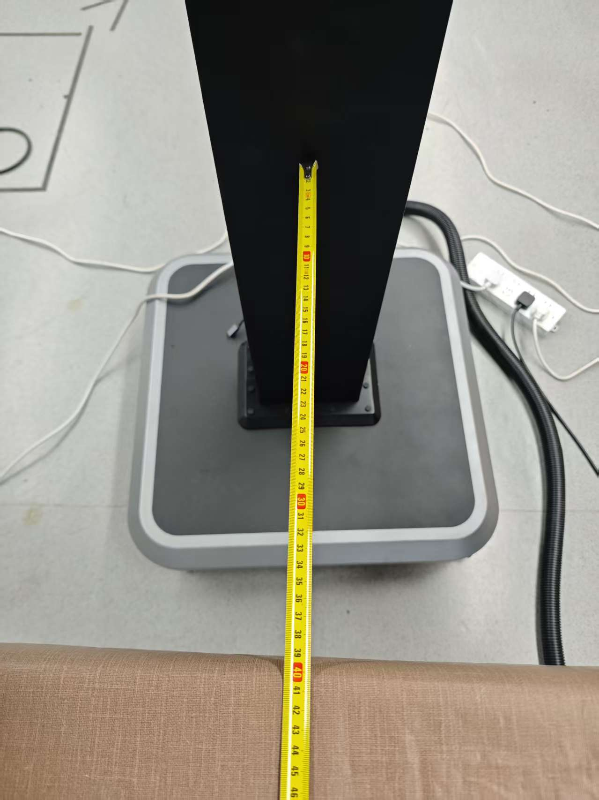
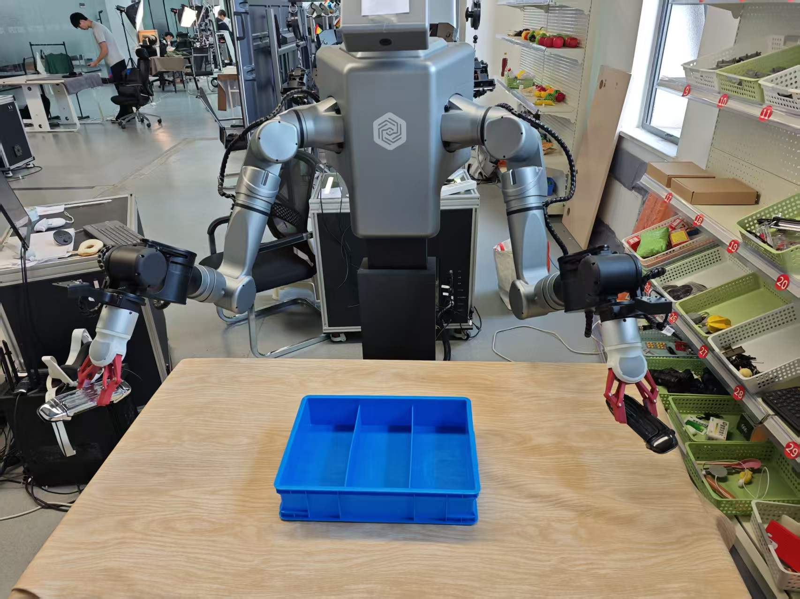
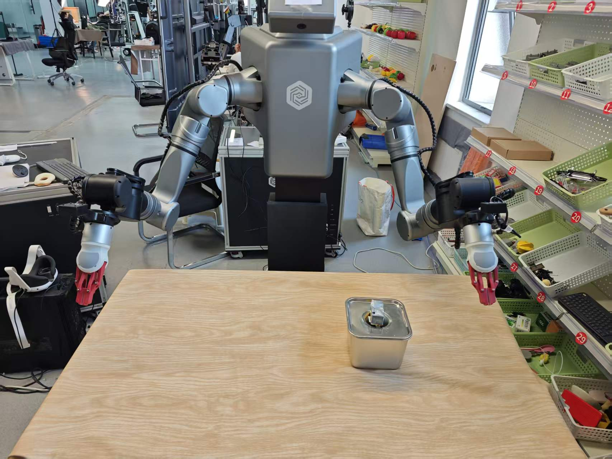

EXP-02 · 8 学时
LDT-01 遥操作与数据采集
穿戴 LDT-01 遥操作端，让从动臂忠实跟随主动臂，按「抓-拿-放」准则为双臂分拣采集高质量示范数据。数据质量 > 数据数量。
01学习目标
- 掌握 LDT-01 硬件构成：主动臂/从动臂参数、四相机布局、工控机平台与开机自检。
- 独立完成「开机 → 一键启动 → 拖拽/遥操作就绪 → 新建任务 → 循环采集 → 停止」全流程。
- 理解主从映射原理：主动臂怎么动，从动臂就怎么动，三路相机与关节角同步落盘。
- 会用「本次采集失败」剔除坏示范，掌握抓-拿-放准则与左右手分工不交叉的采集纪律。
02原理：主从遥操作如何变成训练数据
遥操作像「用大孩子的手当遥控模型」：你握着主动臂（轻、小、12bit 总线舵机），从动臂（谐波关节、19bit、500Hz）在另一侧毫米级复刻你的动作。你的每一次抓放，都以两条时间线被记录——关节角序列（16 个关节 + 2 个夹爪）和三路相机画面（头部概览 + 左右腕近景），两者按同一时间戳对齐，就构成行为克隆的「输入-标签」样本。
主从同构
主动臂与从动臂都是 7 轴，同一套关节语义，映射是位置到位置的直接对应，无需复杂逆解。
时间对齐
相机帧率与关节采样同步写入同一 episode，训练时一帧画面配一帧动作，错位即噪声。
分工纪律
左手始终负责黑色零件进左格、右手负责银色零件进右格；左右交叉会造成演示自相矛盾。
质控阀门
操作失误立即点「本次采集失败」，该组不入库；坏数据进训练集比数据不足更致命。
生活化类比：这就像用矫正牙套——牙套（从动臂）完全按牙模（主动臂动作）走位。若你在示范中途打了喷嚏（碰撞/掉落），这一口「矫正记录」就得作废，否则牙齿会被学歪。
开机到遥操作 5 步：① 清空从动臂运动范围内一切杂物 → ② 进入
start_bash/02tele_and_record 目录执行 . ./01start_tele.sh → ③ 进度条走到 100% → ④ 合上夹爪触发进入遥操作态 → ⑤ 三摄像头画面同屏即就绪。
03硬件与材料：吃透 00-硬件参数
算力平台
i5-13400F / RTX 4060 Ti 16GB / 64GB（32×2）/ 2TB SSD，Ubuntu 22.04 + ROS2；16GB 显存足以本地跑 ACT。
视觉系统
CAM-1 头部 / CAM-2 左腕 / CAM-3 右腕 + CAM-S 备件，92° DFOV、全局快门、最高 1600×1300@60fps、USB 2.0 高速。
主动臂 ×2
7 轴总线舵机，DC12V、100Hz、12bit，运动半径 554mm——遥操作端的「指挥手」。
从动臂 ×2
7 轴谐波关节，DC48V、500Hz、19bit，负载 5kg、半径 850mm + 二指夹爪（0–90mm / 2.5kg / 50Hz）。


相机与视觉配置：4 个 RGB 相机（CAM-1 头部 / CAM-2 左腕 / CAM-3 右腕 / 1 备机），92° DFOV、全局快门、最高 1600×1300@60fps，构成策略输入的三路图像流。
物料清单：黑色零件 ×N、银色零件 ×N、左右分格收纳盒、卷尺（测量桌面到机械臂距离）、LDT-01 遥操作端与急停按钮。开工前清空从动臂运动范围内一切杂物。
04操作步骤：一次完整采集循环
S1开机启动
密码 1 → localhost:8699 一键启动
密码 1 → localhost:8699 一键启动
→
S2遥操作就绪
01start_tele.sh → 上锁扭矩
01start_tele.sh → 上锁扭矩
→
S3新建任务
名称/描述（英文）/数量写大
名称/描述（英文）/数量写大
→
S4示范采集
3 秒内握持→抓拿放→停止当前组
3 秒内握持→抓拿放→停止当前组
- 部署场景：摆好零件与收纳盒，卷尺测量桌面到机械臂距离并记录（复现时环境必须一致）。
- 开机与启动：设备开机（密码 1）→ 浏览器访问 localhost:8699 → 一键启动，等待进度 100%。
- LDT-01 就绪：执行 01start_tele.sh，按界面步骤上锁扭矩；捏合夹爪解锁后即可拖动主臂。
- 预演：任务面板点「预览」先跑一遍空载轨迹，确认无碰撞、路径合理。
- 正式采集：点「开始数据采集」，3 秒内握持操作端完成一次「双手拿零件 → 双手放入对应格」，完成后点「停止当前组」。
- 循环与质控：复位物料进入下一组；任何失误组立即点「本次采集失败」，该组不计入训练。
- 检查落盘：数据默认存于 /home/lindenbot/save_data（编号即子目录名，最大编号 = 最新一集）。
新建任务要点：① 任务管理点「新建」→ ② 名称与描述必填（建议英文，如
sort_black_left_silver_right）→ ③「采集数量」写大一些以支持循环采集 → ④ 保存后任务列表出现新项。遥操作采集要点：点开始数据采集后须在 3 秒内 握持主动臂，三摄像头画面同屏；正常完成点「停止当前组」，失误组点「本次采集失败」排除——坏数据比数据不足更致命。
05关键命令
# ① 启动遥操作（LDT-01 手册 · 01start_tele.sh） cd start_bash/02tele_and_record . ./01start_tele.sh # source 后按步骤 5.1–5.3 上锁扭矩 # ② 切换关节模式：5 = 拖拽模式（0=安全 1=位置） ros2 service call /isaac_joint_mode arm_lifting_msgs/srv/ArmMode "{mode: 5}" # ③ 停止采集并保留数据 / 停止并删除本组数据 ./021data_collect_stop.sh # 正常收尾 ./022data_collect_stop_and_del_data.sh # 废弃本组 # ④ 数据落盘位置与容量（ConfigCameras.yaml） save_base_path : /home/lindenbot/save_data image_save_num : 1000 # 50Hz 下约 20 秒；0 = 无穷
安全红线：双人制操作——一人遥操作、一人安全观察；设备周围 2 米半圆清场；急停触碰后故障码 61445（STO）需按手册复位。
06动画：左右臂遥操作映射
动画：主动臂（左列）上下摆动，从动臂（右列）同频复刻；全过程被三路相机与关节角同时记录为一组 episode。
07互动：左右臂分工配对
先点左列任意一项，再点右列它对应的搭档（配错会闪红）
已配对 0 / 4
08常见问题
Q 从动臂不动/不跟随？
先捏合夹爪解锁扭矩，确认已执行 01start_tele.sh 且模式正确（拖拽 mode=5）；急停被拍也会停（故障码 61445 需复位）。
Q 主从位置对不齐？
按 LDT-01 手册 Q&A：主从不一致时重走自检流程（000check_master_arm / 000check_slave_arm、01SimRviz.sh）。
Q 为什么描述要英文？
任务名/描述会写入数据集 tasks 表作为训练标签，英文避免后续文本编码坑（01 采集流程明确要求英文描述）。
Q 数据太多显存爆了？
采集阶段控制单条时长与总数据量：本地 4060 Ti 16G 跑 ACT，量过大易 OOM——宁可采得精，不必采得多。
LDT-01 屏显排障：故障码
61445（STO 急停）恢复步骤 → ① 急停按钮确认未按下 → ② 屏显「主从不一致」时按自检步骤 → ③ 重启 start_tele.sh 重新上锁扭矩。09拓展阅读
- LDT-01 手册 §5：LED 红（异常）/ 黄（采集就绪）/ 绿（采集中）/ 蓝（重置）四色语义，快速定位状态。
- LDT-01 手册 §6 数据处理：插补检查（DIFF_PERMITTED_MAX=28ms、MIN=14ms）保证轨迹平滑。
- 01-采集流程 · 家庭场景：同一套动线换任务（水果入盒），对照工厂场景理解「换场景不换流程」。
- command/7_record_dual_arm.sh：工程侧录制脚本如何组织 episode_time / episode_num 等参数。
10思考题 · 自测
✅ 完成成果
独立完成 ≥30 组合格双臂分拣示范，save_data 中编号连续、坏组已剔除。
🧠 原理收获
说清主从映射与时间对齐：为什么画面和动作错位半帧就会显著劣化训练。
🛠 技能收获
会开机/自检/建任务/采集/停止/质控六件事，能独立处理扭矩未锁与主从不同步。
📐 评分速览
配对互动 30% + 采集实操规范 40% + 思考题 30%。
思考 1左右手分工「不交叉」是任务约定还是技术必需？如果让左手偶尔跨界去抓银件，数据集会出现什么矛盾信号？
思考 2image_save_num 默认 1000 张 @50Hz ≈ 20 秒。若一组示范经常超过 20 秒，会造成什么现象？应改配置还是改动作节奏？